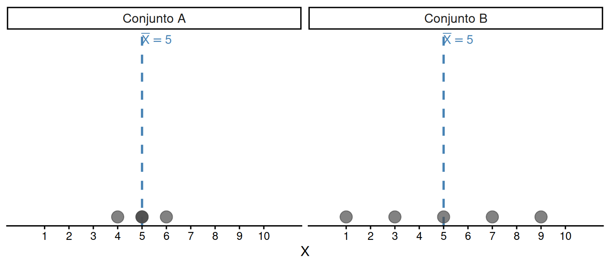
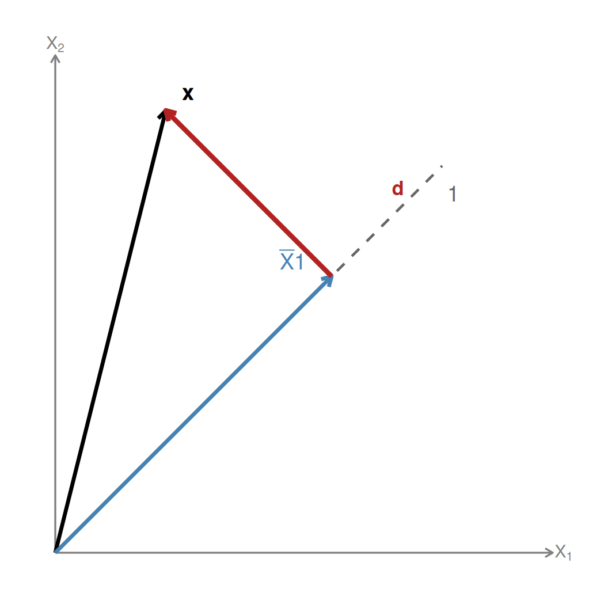

Variância e Desvio Padrão
Estatística descritiva
Variabilidade
Álgebra linear
Formulação vetorial
Construção conceitual da variância amostral e do desvio padrão, com interpretação geométrica e formulação vetorial/matricial.
Descrever um conjunto de dados pela média aritmética responde à pergunta onde estão os valores?, mas não informa o quanto eles variam. Dois conjuntos podem ter a mesma média e comportamentos completamente distintos. Neste capítulo, construímos as medidas que quantificam a dispersão dos dados em torno da média: a variância amostral e o desvio padrão.
1 A ideia de dispersão
Observamos que a média não distingue os dois conjuntos. Precisamos de uma medida que capture o quanto as observações se afastam do centro.
2 Desvios em relação à média
O primeiro passo é calcular, para cada observação \(X_i\), o quanto ela se afasta da média:
\[d_i = X_i - \bar{X}\]
Um desvio positivo (\(d_i > 0\)) indica que a observação está acima da média; um desvio negativo (\(d_i < 0\)) indica que está abaixo. Quanto maior \(|d_i|\), mais distante a observação está do centro.
Exemplo. Para \(X = \{2,\ 6,\ 4,\ 8,\ 5\}\), com \(\bar{X} = 5\), os desvios são:
| \(i\) | \(X_i\) | \(d_i = X_i - \bar{X}\) |
|---|---|---|
| 1 | 2 | -3 |
| 2 | 6 | 1 |
| 3 | 4 | -1 |
| 4 | 8 | 3 |
| 5 | 5 | 0 |
3 Por que não somar os desvios?
Uma candidata natural para medir dispersão seria a soma \(\sum d_i\). Entretanto, como demonstrado no capítulo anterior, essa soma é sempre zero:
\[\sum_{i=1}^n d_i = \sum_{i=1}^n (X_i - \bar{X}) = 0\]
Os desvios positivos e negativos se cancelam mutuamente, pois a média é o ponto de equilíbrio do conjunto. Qualquer medida de dispersão precisa contornar esse cancelamento.
4 Soma dos quadrados dos desvios
Para contornar o cancelamento, elevamos cada desvio ao quadrado. O quadrado transforma todos os desvios em quantidades não-negativas, preservando a informação sobre a magnitude do afastamento:
\[SQ = \sum_{i=1}^n d_i^2 = \sum_{i=1}^n (X_i - \bar{X})^2\]
Esta quantidade é chamada de soma dos quadrados dos desvios em torno da média, ou simplesmente soma dos quadrados (\(SQ\)).
No exemplo:
| \(i\) | \(X_i\) | \(d_i\) | \(d_i^2\) |
|---|---|---|---|
| 1 | 2 | -3 | 9 |
| 2 | 6 | 1 | 1 |
| 3 | 4 | -1 | 1 |
| 4 | 8 | 3 | 9 |
| 5 | 5 | 0 | 0 |
\[SQ = 9 + 1 + 1 + 9 + 0 = 20\]
5 Variância amostral
Antes de escrever a fórmula geral, vale olhar um exemplo pequeno. Considere novamente os valores \(2\), \(5\) e \(8\). A média é \(\bar{X} = 5\), então o vetor de desvios é
\[\mathbf{d} = \begin{bmatrix} 2-5 \\ 5-5 \\ 8-5 \end{bmatrix} = \begin{bmatrix} -3 \\ 0 \\ 3 \end{bmatrix}\]
A soma dos quadrados dos desvios é
\[SQ = (-3)^2 + 0^2 + 3^2 = 18\]
Se sabemos que dois desvios são \(-3\) e \(0\), o terceiro já está determinado, pois a soma dos desvios precisa ser zero. Em outras palavras, depois de centralizar os dados, uma informação fica presa às outras. Por isso, com \(n\) observações, restam apenas \(n-1\) desvios livres para variar.
É essa a intuição por trás da variância amostral:
\[s^2 = \frac{SQ}{n-1} = \frac{\sum_{i=1}^n (X_i - \bar{X})^2}{n-1}\]
No exemplo com \(n = 3\),
\[s^2 = \frac{18}{3-1} = \frac{18}{2} = 9\]
Agora voltando ao exemplo do texto, temos:
\[s^2 = \frac{20}{5 - 1} = \frac{20}{4} = 5\]
NotaVariância amostral
\[s^2 = \frac{\sum_{i=1}^n (X_i - \bar{X})^2}{n-1}\]
A variância mede o tamanho médio da parte que sobra depois de retirar a média.
6 Desvio padrão amostral
A variância \(s^2\) está expressa nas unidades originais de \(X\) ao quadrado, o que dificulta a interpretação direta. O desvio padrão amostral \(s\) resolve isso tomando a raiz quadrada da variância:
\[s = \sqrt{s^2} = \sqrt{\frac{\sum_{i=1}^n (X_i - \bar{X})^2}{n-1}}\]
No exemplo pequeno acima, \(s = \sqrt{9} = 3\). No exemplo do texto, temos \(s = \sqrt{5} = 2.2361\).
Como o desvio padrão volta para a mesma unidade de medida de \(X\), ele pode ser lido como um tamanho típico dos afastamentos em torno da média.
7 Interpretação geométrica
A interpretação geométrica da variância começa com o mesmo passo usado na média: separar o vetor de dados em uma parte constante e uma parte residual. Para o exemplo \(X = (2,5,8)\),
\[\mathbf{x} = \begin{bmatrix} 2 \\ 5 \\ 8 \end{bmatrix}, \qquad \bar{X}\mathbf{1} = \begin{bmatrix} 5 \\ 5 \\ 5 \end{bmatrix}, \qquad \mathbf{d} = \mathbf{x} - \bar{X}\mathbf{1} = \begin{bmatrix} -3 \\ 0 \\ 3 \end{bmatrix}\]
O vetor \(\mathbf{d}\) é o vetor centrado: ele contém apenas o que sobra depois de retirar a média.
Seu comprimento é dado por
\[\|\mathbf{d}\| = \sqrt{(-3)^2 + 0^2 + 3^2} = \sqrt{18}\]
Portanto,
\[SQ = \sum d_i^2 = \|\mathbf{d}\|^2\]
Essa igualdade é a chave da interpretação geométrica: a soma dos quadrados dos desvios é o quadrado do comprimento do vetor centrado. Logo, quanto maior o comprimento de \(\mathbf{d}\), mais espalhados estão os dados em torno da média.
No caso geral,
\[\mathbf{d} = \mathbf{x} - \bar{X}\mathbf{1}\]
Assim,
\[SQ = \sum_{i=1}^n (X_i - \bar{X})^2 = \mathbf{d}^\top\mathbf{d} = \|\mathbf{d}\|^2\]
E a variância pode ser lida como
\[s^2 = \frac{\|\mathbf{d}\|^2}{n-1}\]
A geometria aqui é simples e importante: o vetor \(\mathbf{d}\) não aponta na direção dos vetores constantes, porque sua soma é zero. Em linguagem intuitiva, ele não tem componente na direção da média. Em linguagem geométrica, dizemos que \(\mathbf{d}\) é perpendicular à direção de \(\mathbf{1}\); formalmente, \(\mathbf{d}\) é ortogonal a \(\mathbf{1}\).

8 Formulação vetorial
A interpretação anterior pode ser escrita de modo compacto com a matriz que retira a média do vetor. Definimos
\[\mathbf{M} = \mathbf{I} - \frac{\mathbf{1}\mathbf{1}^\top}{n}\]
Então,
\[\mathbf{d} = \mathbf{M}\mathbf{x}\]
Ou seja, aplicar \(\mathbf{M}\) a um vetor significa remover sua parte constante e deixar apenas os desvios em torno da média.
A soma dos quadrados pode ser escrita como
\[SQ = \mathbf{d}^\top\mathbf{d} = (\mathbf{M}\mathbf{x})^\top(\mathbf{M}\mathbf{x}) = \mathbf{x}^\top\mathbf{M}\mathbf{x}\]
Portanto,
\[s^2 = \frac{\mathbf{x}^\top\mathbf{M}\mathbf{x}}{n-1}\]
Essa forma vetorial deixa clara a ponte com a álgebra linear: a variância é o quadrado do tamanho da parte residual do vetor, normalizado por \(n-1\).
Se quisermos registrar uma propriedade técnica, \(\mathbf{M}\) é uma matriz que, aplicada duas vezes, produz o mesmo resultado da primeira aplicação. Isso faz sentido: depois que a média foi retirada, não há mais média para retirar.
NotaVariância e desvio padrão na linguagem vetorial
| Quantidade | Leitura pedagógica | Expressão vetorial |
|---|---|---|
| Vetor centrado | sobra depois de retirar a média | \(\mathbf{d} = \mathbf{M}\mathbf{x}\) |
| Soma dos quadrados | quadrado do comprimento do vetor centrado | \(SQ = \|\mathbf{d}\|^2 = \mathbf{x}^\top\mathbf{M}\mathbf{x}\) |
| Variância amostral | comprimento ao quadrado por grau de liberdade | \(s^2 = \dfrac{\mathbf{x}^\top\mathbf{M}\mathbf{x}}{n-1}\) |
| Desvio padrão | comprimento reescalado | \(s = \dfrac{\|\mathbf{d}\|}{\sqrt{n-1}}\) |
9 Formulação matricial
Para \(p\) variáveis organizadas na matriz \(\mathbf{X}\) (\(n \times p\)), a operação
\[\tilde{\mathbf{X}} = \mathbf{M}\mathbf{X}\]
remove, de cada coluna, a respectiva média. Assim, cada coluna de \(\tilde{\mathbf{X}}\) passa a ser um vetor centrado.
As variâncias de todas as variáveis podem ser obtidas ao mesmo tempo por
\[\mathbf{s}^2 = \frac{1}{n-1}\,\operatorname{diag}\!\left(\tilde{\mathbf{X}}^\top\tilde{\mathbf{X}}\right) = \frac{1}{n-1}\,\operatorname{diag}\!\left(\mathbf{X}^\top\mathbf{M}\mathbf{X}\right)\]
onde \(\operatorname{diag}(\cdot)\) extrai os elementos da diagonal principal.
A matriz completa
\[\frac{1}{n-1}\mathbf{X}^\top\mathbf{M}\mathbf{X}\]
reúne não apenas as variâncias nas diagonais, mas também as covariâncias entre as colunas. É justamente essa ponte entre dados centrados, produtos escalares e somas dos quadrados que prepara o próximo capítulo.